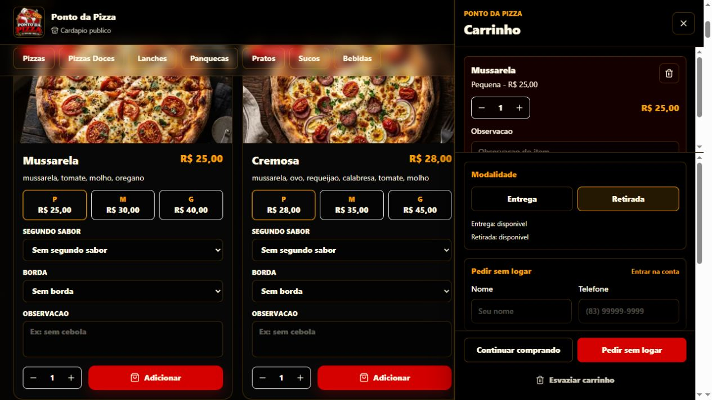
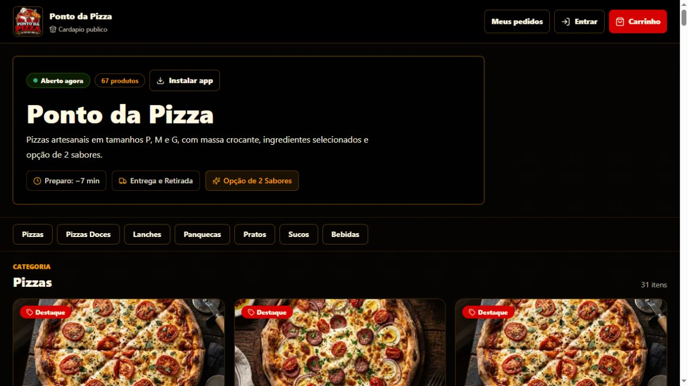
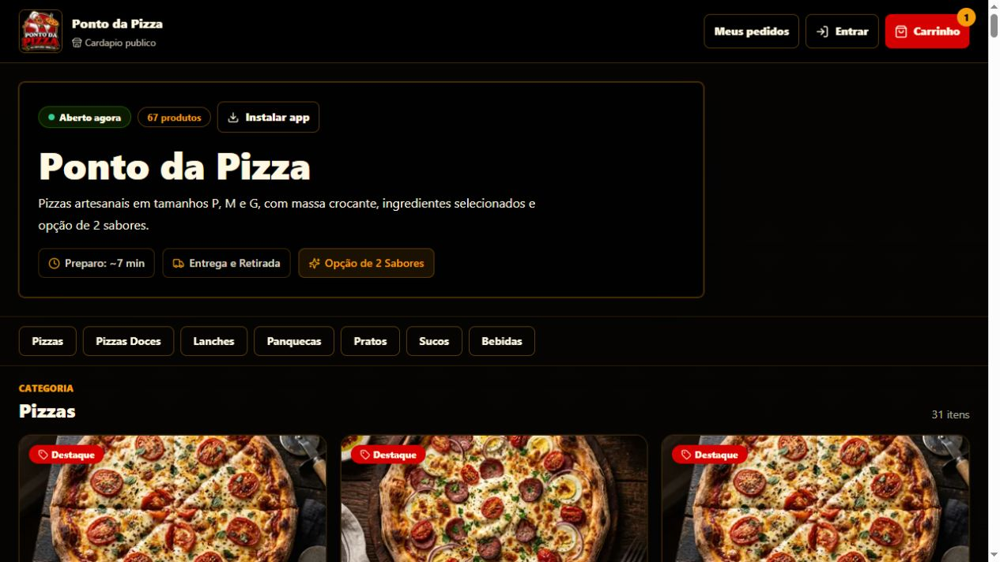

01 / PROJECT
Web App · Food Tech
Ponto da Pizza
Aplicação web desenvolvida para transformar o processo de pedidos de uma pizzaria em uma experiência digital própria, permitindo que clientes naveguem pelo cardápio, personalizem produtos e realizem seus pedidos online.
Acessar projeto

